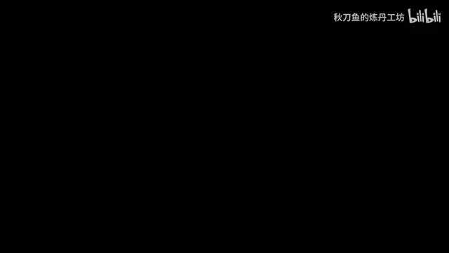
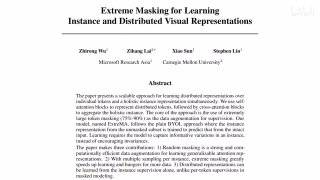
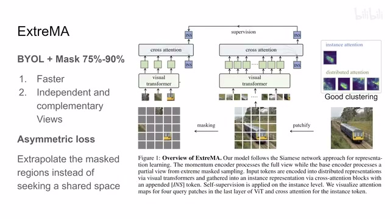
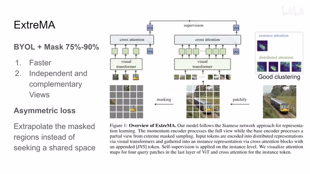
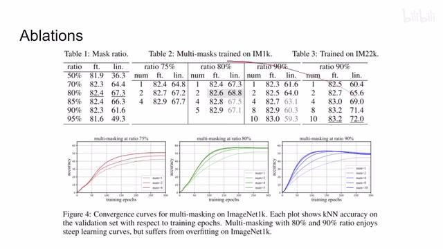
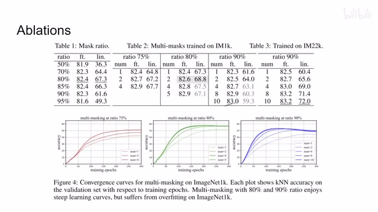
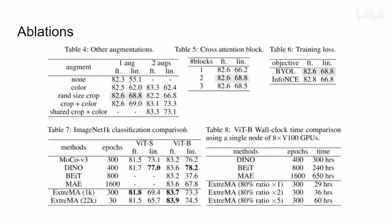
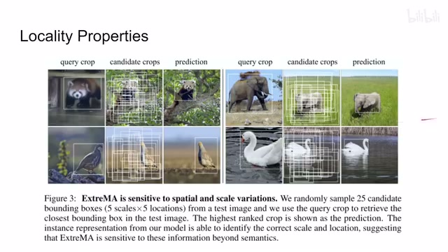
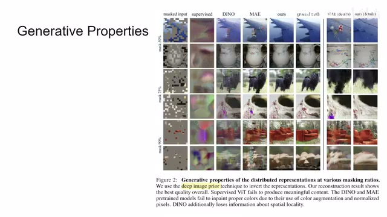
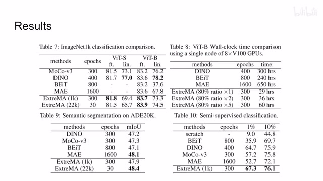

← 返回阅读库 · 原论文目录
论文讲解阅读文档 · 表征学习 · v163
Extreme Masking for Learning Instance and Distributed Visual Representations
视频时长 00:05:21；讲解文字 2,528 字符；提取讲解画面 13 张。按视频原顺序阅读，每段文字保留时间戳。
文字来自整段视频的自动语音转写，按自然停顿分段，并与 PPT / 论文页面 / 演示画面对齐。未将讲解压缩为摘要；术语、数字和口述公式请结合画面及原论文核对。 阅读稿已校正规范部分明确术语误识别；原始逐字稿和每处修改记录另行保留。
讲解画面为源视频截图（640×360），不是可编辑 PPT 文件。全片按每秒 2 帧扫描内容变化，逐步展开页保留；连续动画保留代表画面。清晰度受源视频限制。
下载完整资料包 · 含离线 HTML、PDF、Word、全部 PPT 画面和字幕。
原论文与材料
Extreme Masking for Learning Instance and Distributed Visual Representations · 下载完整 PDF（21 页）
按时间阅读
00:00:00–00:00:01 · 画面 001

00:00:00–00:00:01 · 画面 001大家好,今天我们来快速说一篇论文 Extreme Masking for Learning Instances and Distributed Visual Representations
00:00:01–00:00:17 · 画面 002

00:00:01–00:00:17 · 画面 002这篇呢就是把 Masking BERT MAE 这些东西和这个 Contrastive Learning 对比学习这些东西结合起来做了一个工作首先这个结构是一个 BYOL 的结构这个我们之前介绍过了无非就是经过不同的 Data Augmentation 之后要相似嘛对吧然后做一个对比学习那这里呢本文的改进主要就是 OK 我原始的图像拿进来
00:00:17–00:02:17 · 画面 003

00:00:17–00:02:17 · 画面 003我做的不再是这些传统的 data augmentation 了，我是像这个 MAE BERT 一样啊，我把先把这个图片画成一个个 patch，然后呢这些 patch 呢我 mask 掉大部分啊，这些大部分去掉了，这里呢大概比例是 75%到 90%这样一个比例，然后呢我只把剩下的这些 token 啊放到我们的 Visual transformer 里面那这个呢是我们 BYOL 里面的 online encoder，这个呢是 BYOL 里面 target encoder，然后就继续做嘛对吧，然后这个 instance token 对吧拿出来，大家就开始相互比较。那这样做的好处呢很显然就是，首先首先我 online encoder 它处理的这个 patch 的数量大幅的减少了，同时因为我们只在 online encoder 计算梯度嘛，所以相应的这个梯度的计算量呢也减少了，所以它这个方法是很快的
同时这种 random masking 可以被视为一种好的 data augmentation，它帮我们提供了相互独立但是互补的一个小的 patch，这里坐着管它叫 views。那么很显然从 patch 这个层次它就可以把这几个 patch 聚合在一起，因为它们都来自同一张图像，所以你也可以说它是一个比 instance level 更加细一层的 patch level 的这样一种 contrastive learning，它其实有那么一点意思那其实你现在在想，我们之前在介绍 AugMix 的时候也说到对吧，Data Augmentation 和这个 Self-Supervised Learning 这两个东西是分不太开的。那么再回到我们框架的本身，BYOL 本质是要把我们的这个 Online Network 的 Representation 向我们 Target Network Representation 来靠拢的。那所以呢，它的这个 Loss 是一个非对称的 Loss，因为我们的梯度只在这一边传递嘛，但是在作者这种构型下，我们的 Online 的 Network 呢它只有这个小量的 Patch
而 target network 它有全部的 patch 的集合，所以某种程度上我们可以认为它在 loss 会要求我们的 online network 去根据已经有的这些 patch 来去插补去预测周围的这些被 mask 掉的 patch。同时因为梯度只在 online 这边传递，相当于把这些小的 patch 拉向我们这一群 patch 这样一个集合，它有这么一个聚类的作用
00:02:17–00:03:23 · 画面 004

00:02:17–00:03:23 · 画面 004所以你也可以说它隐式的做了这种 Masked Autoencoder 的工作，当然它没有重建这种拉扯，更多的是在 Representation 这个聚类的角度来理解的。既然说到聚类，作者也给我们展示了确实它能够帮助我们得到一个好的聚类的效果，你可以看到这个是我们 Instance Token 它查出来的 Attention，可以看到它重点关注的电车的区域没什么毛病，但是如果我们看到每一个 Patch 比如说这个 Patch 它就关心这边这个草地这个车上的这个 patch 关心这个车对吧，其他地方的 patch 就关心其他地方的背景，这是一个很有意思的演示的实例。那么下面我们直接来看到作者汇报的结果，首先是一些 ablation，我们确定一些超参数对吧，比如说我应该 mask 多少，这里是选了 80%的比例。然后既然我们 online 这一部分这个 student network 这个 online network 它很轻量对吧，那我不如多搞几个吗
00:03:23–00:03:43 · 画面 005
00:03:23–00:03:43 · 画面 005就是我每次用不同的 masking 去多做几次这个图像那可以看到作者做了一些尝试等等包括他这个模型的这个收敛的情况可以看到我们多做几次 masking 能够帮助我们改善他的这个训练的速度还有结果这个是作者做了一些超参数的选择那么当然还有其他更详细的实验呢感兴趣的朋友呢去看原文那么最后呢一个主要的结果在这个 ImageNet 做这个 classification
00:03:43–00:03:44 · 画面 006

00:03:43–00:03:44 · 画面 00600:03:44–00:03:55 · 画面 007

00:03:44–00:03:55 · 画面 00700:03:55–00:03:56 · 画面 008

00:03:55–00:03:56 · 画面 00800:03:56–00:04:00 · 画面 009
00:03:56–00:04:00 · 画面 00900:04:00–00:04:27 · 画面 010
00:04:00–00:04:27 · 画面 010然后训练速度的提升对吧？Semantic segmentation 这种下游任务对吧？还有这种，还有这种半监督的只用一部分 label 去做训练等等等等这些的结果，还是感兴趣的朋友到原文查看，总的来说呢，这篇是一个很直接的工作，把 MAE 和这个 BYOL 结合起来了，它的结合方法也没有显得说特别刻意，效果也是不错的
00:04:27–00:04:54 · 画面 011

00:04:27–00:04:54 · 画面 011那当然他最后还有一点天头，包括用这个 representation 去做这个 image 的 query，就是他这里我就用这一小块啊做这个 query，我去在这个目标这个 image 里面我去查他，你看这里提了很多 proposal 吗对吧？我去查哪个 proposal 和这个 query 最相近啊？查出来的这个结果啊这边是一样的，当然这只是几个个例啊啊，就拿出来看个热闹啊这样子那么还有这个 generative properties，就是他用了这个 deep image prior 这篇文章去根据这个 representation 还把我们的这个图像给它构建出来，可以看到本文的这个方法很接近这个原始的这个图像了，和 MAE 比起来细节好很多，当然还是这些只是看个乐，只是定性的去说明这个 representation 的结果，那么以上就是我对这个论文的一个快速的梳理，那么感谢您的收看，再见
00:04:54–00:05:16 · 画面 012

00:04:54–00:05:16 · 画面 01200:05:16–00:05:21 · 画面 013

00:05:16–00:05:21 · 画面 013转写与来源说明 · 0 个自动复核提示
保留 13 个原始语音片段，0 个片段触发自动复核提示。提示仅用于定位可能的术语、重复或识别问题，不等于已确认错误。
讲解画面为源视频截图（640×360），不是可编辑 PPT 文件。全片按每秒 2 帧扫描内容变化，逐步展开页保留；连续动画保留代表画面。清晰度受源视频限制。
原视频：paper/合集_2026-10-16_表征学习/[论文简析]Extreme Masking for Learning Instance and Distributed Visual..[2206.04667].mp4
SHA-256：9de6c4120eaa7f66aba472ad0c9669e3a7f1977a9bf7d8ea5359f30a213bee5b
全文按视频语音与画面制作。原论文可从上方链接下载；完整资料包保留全文、原始逐字稿、字幕和校对记录。